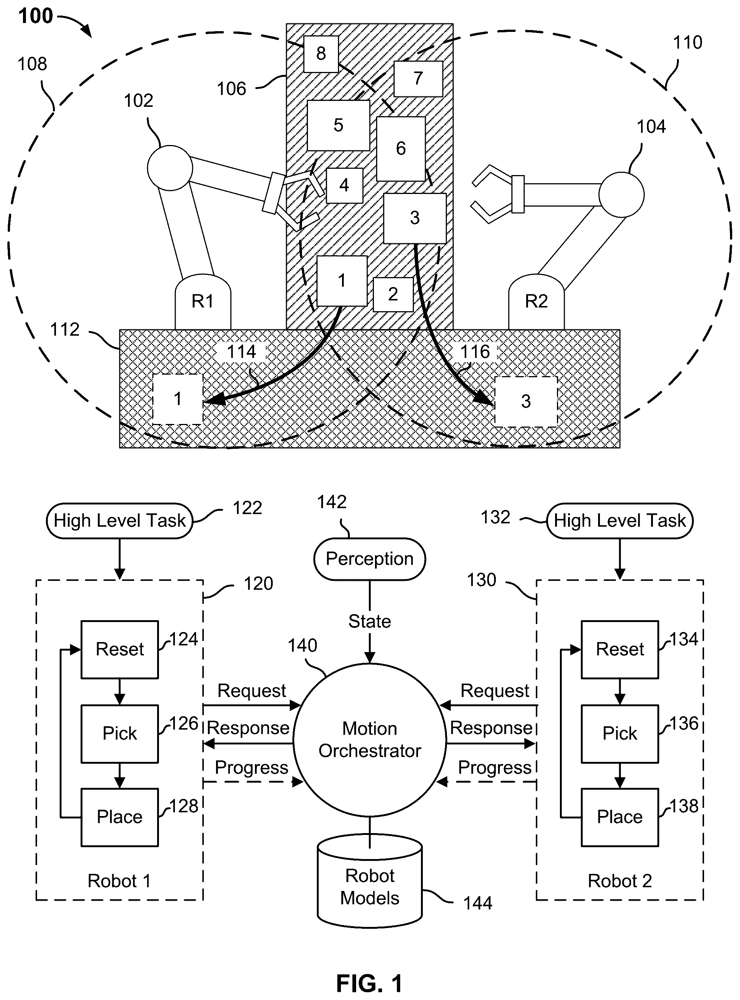
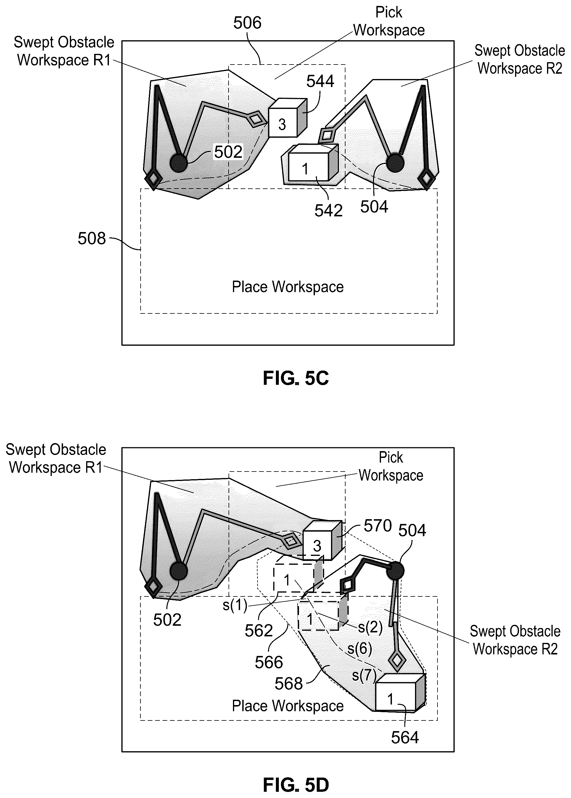
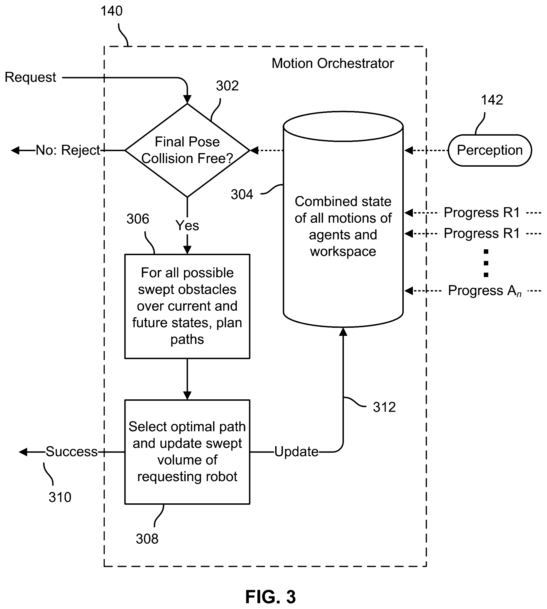

Please enter the password to view this presentation.
Varun | Dexterity Robotics
Solving the Multi-Robot Coordination Challenge
Timing: 1 minute
Senior Robotics Engineer
Dexterity.ai | Warehouse Robotics
6 years of experience developing applications, physical AI, and software infrastructure for complex robotic systems
Timing: 30 seconds
How do we achieve concurrent motion while guaranteeing safety?
Naive solution: one robot at a time (safe but ~40% slower)
"This isn't just an engineering problem - it's a business problem. Every second a robot waits is money lost."
Timing: 1.5 minutes
"We designed for the hard requirements first, then optimized for throughput."
Timing: 1 minute
"Will these paths EVER occupy the same space?"
→ If yes, block entirely
"Will they occupy the same space AT THE SAME TIME?"
→ If no, proceed concurrently
Like traffic intersections: cars cross the same point, just not simultaneously.
"We went from blocking space to blocking space-TIME. Time is now a first-class dimension."
Timing: 1.5 minutes


"Each layer can fail independently without compromising safety."
Timing: 2 minutes

class TrajectorySweptVolume:
def __init__(self, robot_collision_set, trajectory_data, time_step=0.1):
# Sample at fixed time intervals using TOPPRA's reparameterized spline
time_splits = [0.0, 0.1, 0.2, ..., duration]
for t in time_splits:
# Get exact joint angles at time t from TOPPRA spline
joint_angles = trajectory_data.continuous_path(t)
# Compute collision geometry at this configuration
entities[t] = robot_collision_set.collision_entities(joint_angles)This gives us: dict[time_seconds, list[CollisionEntity]]

reparameterized_spline gives us a continuous function: time → joint anglesTEMPORAL_ORCHESTRATION_TIME_STEP)"TOPPRA gives us the time dimension. We know where the robot will be at t=2.3 seconds."
Timing: 1.5 minutes
This algorithm determines how long robot A should wait before starting its trajectory, given that robot B is currently executing a time-parameterized trajectory.
def collision_check_trajectories_based_on_expected_states_at_time(
robot_a_entities_at_time: dict[float, list[Entity]], # {t: entities}
robot_b_entities_at_time: dict[float, list[Entity]], # {t: entities}
wait_time: float = 0.0,
lookahead_safety_time: float = 0.2, # 200ms buffer
):
for t_a, entities_a in robot_a_entities_at_time.items():
for t_b, entities_b in robot_b_entities_at_time.items():
# KEY: Only check if Robot B will still be at this position
# when Robot A arrives (accounting for wait_time offset)
if t_b <= (t_a + wait_time - lookahead_safety_time):
continue # Robot B will have moved past this point
if collision(entities_a, entities_b):
return COLLISION
return SAFEIf collision detected, increment wait_time by 0.1s and retry until:
wait_time > 5s → Fall back to sequential executiont_b <= t_a + wait_time, Robot B will have already passed that point when Robot A arriveslookahead_safety_time adds a safety buffer for timing uncertaintyTEMPORAL_ORCHESTRATION_MAX_WAIT_TIME) - beyond this, we fall back to blockingTEMPORAL_ORCHESTRATION_LOOKAHEAD_SAFETY_TIME = 0.2, TEMPORAL_ORCHESTRATION_TIME_STEP = 0.1"We compute exactly how long Robot A needs to wait for Robot B to clear the overlap zone."
Timing: 1.5 minutes


// From collision_monitor.cc - runs at 100Hz
CollisionCheckResult CheckCollisionFree(double current_progress, double current_speed) {
// Compute velocity-based lookahead (400ms ahead)
LookaheadResult lookahead = ComputeLookahead(current_progress, current_speed);
// Update own swept volume window [current, current + lookahead]
UpdateSelfSweptVolumeWindow(current_progress, lookahead.safe_progress);
// Check against partner's swept volume (also windowed by their progress)
collision_free = swept_volume_set_->IsCollisionFree(*other_swept_set);
}kLookaheadTime = 0.4 seconds aheadlookahead_distance = current_speed * 0.4s + safety_bufferMultiPoseArticulatedBodyCollisionSet for efficient windowed collision checkingUpdateWindow() takes ~1-2µs vs ~275µs for rebuilding the collision set"The CollisionMonitor doesn't trust the planner. It verifies independently at 100Hz using the same temporal swept volume concept."
Timing: 1.5 minutes
Problem: Trajectories have ingress/keypoints/egress segments with different safety needs
Solution: Split trajectory swept volume by segment, validate each separately
ingress_dict, keypoints_dict, egress_dict = split_trajectory_swept_volume_by_segments(
trajectory_swept_volume,
ingress_joint_path, keypoints_joint_path, egress_joint_path
)
# Check each segment with appropriate collision scenesProblem: Both robots could end up waiting for each other indefinitely
Solution: Maximum wait time threshold (5s) - if exceeded, fall back to sequential execution to guarantee progress
# If wait_time exceeds threshold, fall back to safe sequential mode
if wait_time > TEMPORAL_ORCHESTRATION_MAX_WAIT_TIME: # 5.0 seconds
return FALLBACK_TO_SEQUENTIALsplit_trajectory_swept_volume_by_segments() uses path distance fractions to divide the time-split volumes
commit_with_temporal_orchestration on trajectory strategy enables/disables per-trajectory"The algorithm was 20% of the work. The edge cases were 80%."
Timing: 1.5 minutes
| Metric | Before (Sequential) | After (Temporal) | Improvement |
|---|---|---|---|
| System Throughput | Baseline | +40% | +40% |
| Robot Wait Time | Baseline | -60% | -60% |
Video Demo: Dual-arm coordination with temporal orchestration
"40% more throughput with zero hardware changes. Pure software improvement."
Timing: 1.5 minutes
TOPPRA gives us time parameterization → temporal validation
Python validation + C++ CollisionMonitor at 100Hz
40% throughput gain, zero collisions
Designed the overall temporal orchestration architecture
Implemented the entire Python orchestration layer (MotionOrchestrator, TemporalValidator, TrajectorySweptVolume)
Implemented parts of the C++ CollisionMonitor integration
time → joint_angles"Temporal reasoning turned a blocking problem into a scheduling problem."
Timing: 1 minute + Q&A